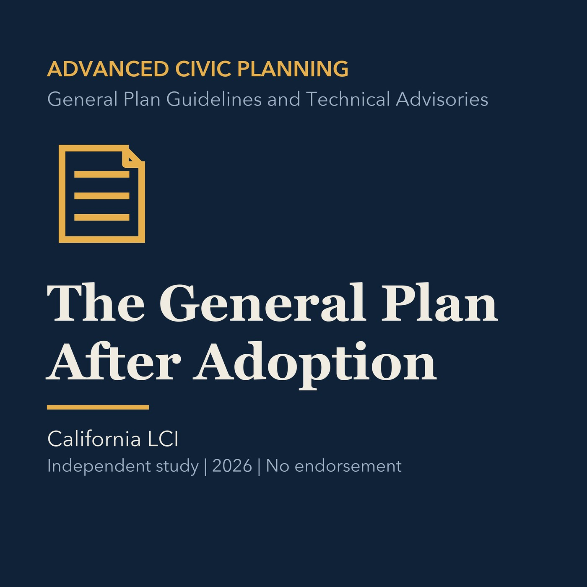

EPISODE 10
The General Plan After Adoption
Treats the general plan as an implementation system that requires monitoring and adjustment.

- Stable GUID
2a3cef14-fb50-59f5-86da-5d844c2e0bbf- Release
- advanced-civic-planning-v2026.3
- SHA-256
abf8ccb2332c844716665a74c1bf33718b5d065103059dbac41b9519e5baeddc